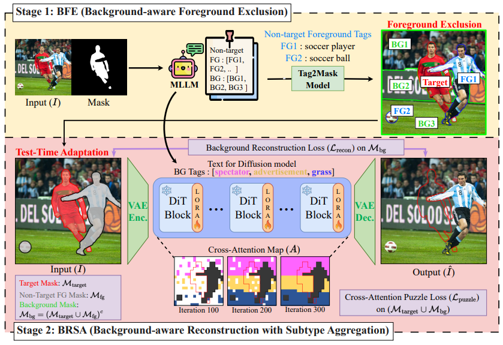
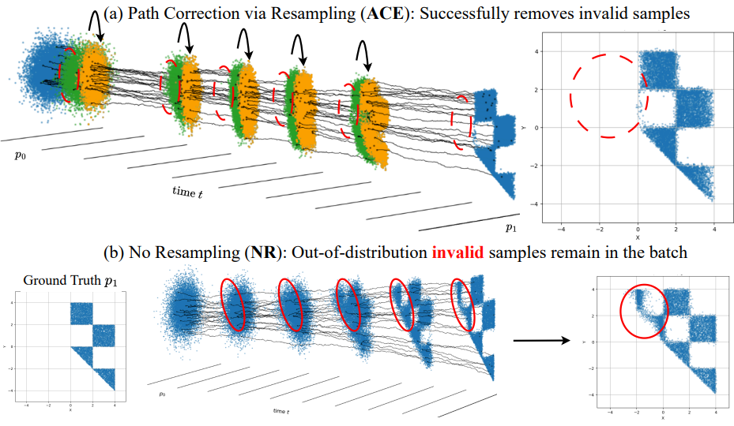
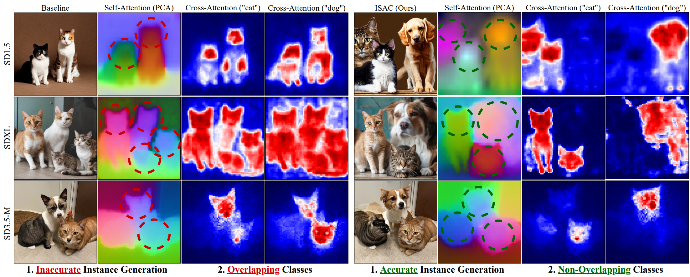
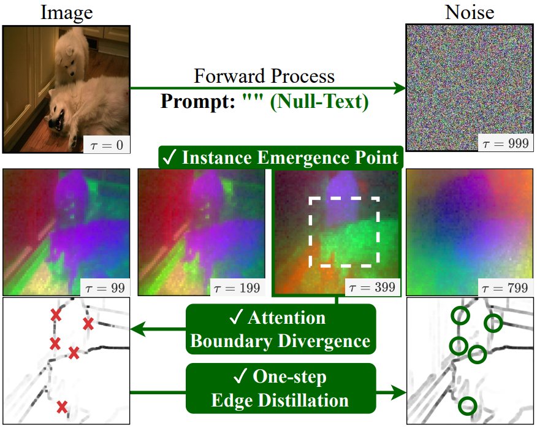
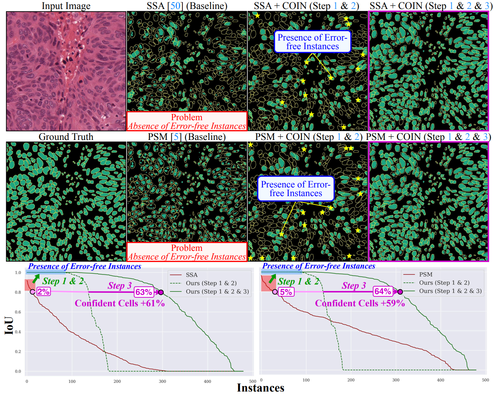
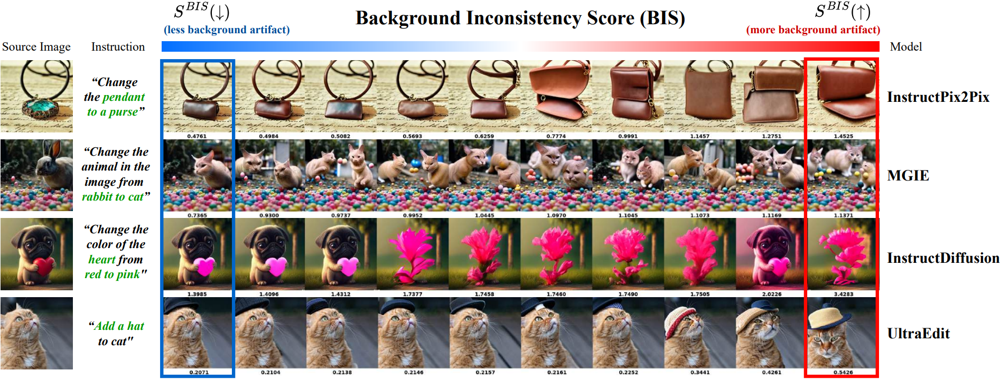
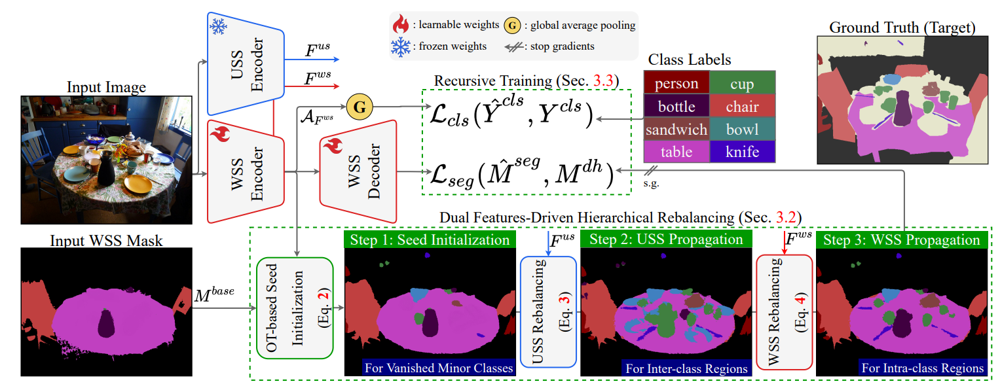
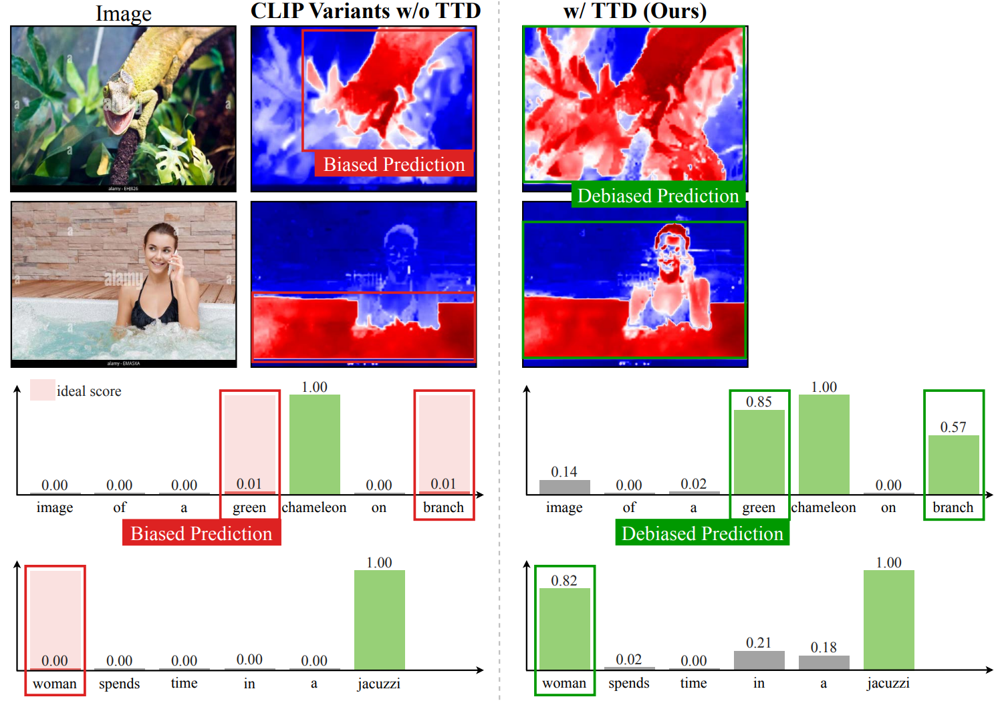
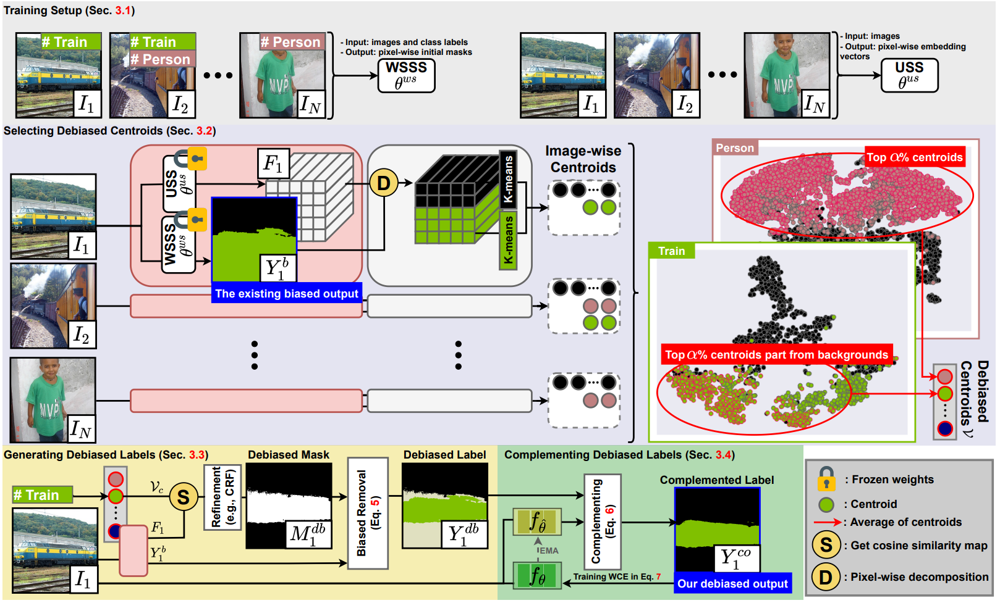
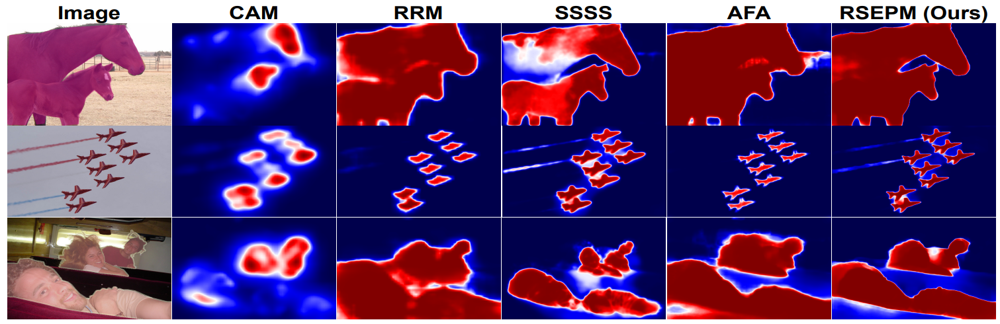

I lead AI research and development at OGQ, where I have been building practical and interpretable machine learning systems since 2017. My primary focus is on designing models that prioritize tangible real-world impact , emphasizing robustness, transparency, and usability alongside strong empirical performance.
Since 2021, I have been conducting research under the supervision of Prof. Kyungsu Kim at the SNU AIBL Lab. This collaboration has deeply influenced my approach to explainable AI and data-efficient learning. Integrating these insights, I strive to develop AI systems that are not only powerful but also understandable and responsible.









